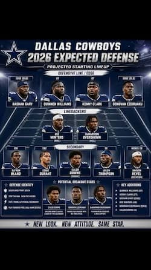

Coming off the 2025 season Dallas failed to meet expectations. While having a strong offense with arguably the best wide reciver duo in the league, the defense has been a concern along along with other unexpected inguries. When things were noy looking great from the team at their lowest point last year a huge trade was put into effect where the cowboys would trade away Micah Parsons, their star linebacker to the Green Bay Packers. In one of the biggest trades in recent memory fans were divided on the decision thinking that the Cowboys severly lost the trade
Upcoming Season
Fast foward into the offseason, draft and into the current preseason Dallas seems to have been looking to build on their strengths and address the weaknesses from last season. Through the trade they gained a defensive player from green bay and most important 3 first round draft picks which gives them the opportunity to select a new star player in the draft. The main player they selected was a safety named Caleb Downs from Ohio state, he will be a key factor in this years defence.
